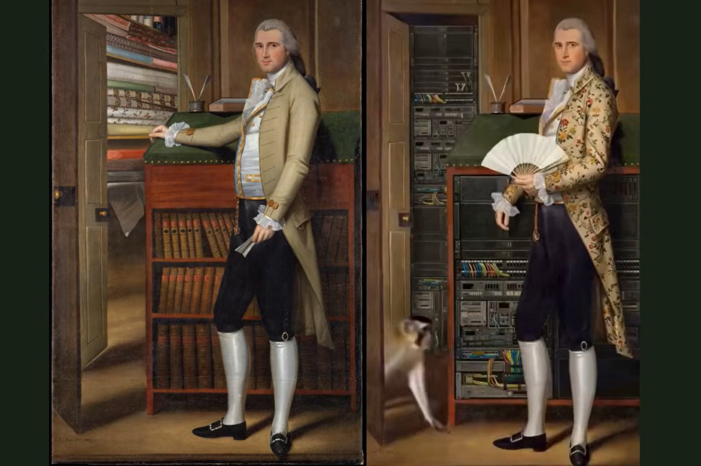

The Data
Merchant
An editorial exploration of how value shifted from material goods to digital information.
Project Question
How can historical portraiture speak to data, commerce and technology?
Data & Visual Culture
Visual Experiment
The Story
The Data Merchant began with a Renaissance portrait of a textile merchant.
Looking at the painting, I started asking a simple question: what would represent wealth today?
Centuries ago, fabrics, spices and precious goods defined economic power. Today, information has become one of the world's most valuable assets.
The project transforms this historical shift into an interactive editorial experience, inviting visitors to reflect on how the meaning of value has changed across time.
Research
The project combines art history, economic history and contemporary digital culture.
Starting from a Renaissance portrait, I researched the symbolic role of merchants, luxury goods and trade networks, then translated those ideas into today's data economy.
Rather than illustrating technology, the project explores how the concept of value evolves while the human desire to accumulate, exchange and preserve wealth remains constant.
Visual Language
The interface preserves the visual language of the original painting while introducing contemporary editorial design.
Typography, motion and interaction establish a dialogue between historical imagery and modern digital systems, allowing the past and the present to coexist within the same visual narrative.
Outcome
Originally created as an experimental digital experience, The Data Merchant became an exploration of how historical artworks can generate contemporary reflections.
Rather than recreating a painting, the project reinterprets it through interaction, asking visitors to reconsider what we value today.

Value changes.
Human nature doesn't.
Skills
Research Continues
The Data Merchant is part of an ongoing investigation into how historical artefacts can be reinterpreted through contemporary digital experiences.
Together with Atlas of Forgotten Queens, TimeMap and Wonder Madrigale, it explores new ways of transforming cultural research into interactive visual narratives.